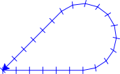

Christmas decorations, snowflakes and reflection symmetry
Contents
Christmas decorations, snowflakes and reflection symmetry#
An observant reader of Christmas decoration, snowflakes and rotational symmetry (which we recommend you read before this tutorial) might have noticed snowflakes often have more than just rotational symmetry. Snowflakes also have reflection symmetry, meaning that if we look at the mirror image of one of the “arms”, it’s the same as the original image.

Reflective symmetry#
Landscape reflected in water (image by Eberhard Grossgasteiger).
When drawing an image with reflection symmetry, we can use a loop to cut down on how many lines of code we need (like what we did with rotation symmetry). Below is the code we used to create a snowflake in Christmas decoration, snowflakes and rotational symmetry. Looking closely, we can see that lines 11-14 and 21-24 are very similar, but the angles point in opposite directions.
1import turtlethread
2
3needle = turtlethread.Turtle()
4with needle.running_stitch(30):
5
6 for arm in range(6):
7 # Move forward a little bit
8 needle.forward(90)
9
10 # Draw the first "branch" pointing a little downwards
11 needle.right(30)
12 needle.forward(60)
13 needle.backward(60)
14 needle.left(30)
15
16 # Move forward and then back again
17 needle.forward(90)
18 needle.backward(90)
19
20 # Draw the second "branch" pointing a little upwards
21 needle.left(30)
22 needle.forward(60)
23 needle.backward(60)
24 needle.right(30)
25
26 # Move backwards to the starting point
27 needle.backward(90)
28
29 # Rotate 60 degrees to the right to draw six branches
30 needle.right(60)
31
32needle.visualise()
{kind=link}
To take advantage of the reflection symmetry, we first need to notice that rotating 30 degrees to the left is the same as rotating -30 degrees to the right.
This means we can replace left with right if we add a negative sign to the angle.
1import turtlethread
2
3nål = turtlethread.Turtle()
4with nål.running_stitch(30):
5
6 for arm in range(6):
7 # Move forward a little bit
8 nål.forward(90)
9
10 # Draw the first "branch" pointing a little downwards
11 nål.right(30)
12 nål.forward(60)
13 nål.backward(60)
14 nål.right(-30)
15
16 # Move forward and then back again
17 nål.forward(90)
18 nål.backward(90)
19
20 # Draw the second "branch" pointing a little upwards
21 nål.right(-30)
22 nål.forward(60)
23 nål.backward(60)
24 nål.right(30)
25
26 # Move backwards to the starting point
27 nål.backward(90)
28
29 # Rotate 60 degrees to the right to draw six branches
30 nål.right(60)
31
32nål.visualise()
{kind=link}
Because we can change direction by changing the sign of the angle, we can use a for loop over -1 and 1 to loop over two different directions:
1import turtlethread
2
3nål = turtlethread.Turtle()
4with nål.running_stitch(30):
5
6 for arm in range(6):
7 for direction in [-1, 1]:
8 # Move forward a little bit
9 nål.forward(90)
10
11 # Draw the "branch", which will point either downards or upwards, depending on the direction
12 nål.right(30*direction)
13 nål.forward(60)
14 nål.backward(60)
15 nål.right(-30*direction)
16
17 # Move a bit forward and then back to start
18 nål.forward(90)
19 nål.backward(180)
20
21 # Rotate 60 degrees to the right to draw six branches
22 nål.right(60)
23
24nål.visualise()
{kind=link}
We can see that this code contains a lot fewer lines!
Try it yourself:
Use code to embroider your own snowflake with both rotational and reflection symmetry! Below is a gallery of examples you can use as a starting point or for inspiration:
Example snowflakes#
Snowflake 1
{kind=link}
{kind=link}
Kode for arm
1from turtlethread import Turtle
2
3needle = Turtle()
4direction = 1
5
6with needle.running_stitch(20):
7 needle.forward(30)
8 needle.right(120 * direction)
9 needle.forward(15)
10 needle.backward(15)
11 needle.left(120 * direction)
12
13 for branch_length in range(30, 21, -4):
14 needle.forward(20)
15 needle.right(60 * direction)
16 needle.forward(branch_length)
17 needle.backward(branch_length)
18 needle.left(60 * direction)
19
20 needle.forward(10)
21 needle.backward(100)
22
23needle.visualise()
Kode for snowflake
1from turtlethread import Turtle
2
3needle = Turtle()
4
5with needle.running_stitch(20):
6 for side in range(6):
7 for direction in [1, -1]:
8 needle.forward(30)
9 needle.right(120 * direction)
10 needle.forward(15)
11 needle.backward(15)
12 needle.left(120 * direction)
13
14 for branch_length in range(30, 21, -4):
15 needle.forward(20)
16 needle.right(60 * direction)
17 needle.forward(branch_length)
18 needle.backward(branch_length)
19 needle.left(60 * direction)
20
21 needle.forward(10)
22 needle.backward(100)
23
24 needle.right(60)
25
26needle.visualise()
Snowflake 2
{kind=link}
Snowflake

Kode for arm
1from turtlethread import Turtle
2
3needle = Turtle()
4direction = 1
5
6with needle.running_stitch(20):
7 needle.forward(120)
8 needle.circle(direction * 50, 220)
9 needle.home()
10
11needle.visualise()
Kode for snowflake
1from turtlethread import Turtle
2
3needle = Turtle()
4
5with needle.running_stitch(20):
6 for arm in range(4):
7 for direction in [1, -1]:
8 needle.right(arm*90)
9 needle.forward(120)
10 needle.circle(direction * 50, 220)
11 needle.home()
12
13needle.visualise()
Snowflake 3
{kind=link}
{kind=link}
Kode for arm
1from turtlethread import Turtle
2
3needle = Turtle()
4direction = 1
5
6with needle.running_stitch(20):
7 for radius in range(24, 11, -4):
8 needle.forward(30)
9 needle.circle(radius*direction)
10 needle.backward(120)
11
12needle.visualise()
Kode for snowflake
1from turtlethread import Turtle
2
3needle = Turtle()
4
5with needle.running_stitch(20):
6 for side in range(6):
7 for direction in [1, -1]:
8 for radius in range(24, 11, -4):
9 needle.forward(30)
10 needle.circle(radius*direction)
11 needle.backward(120)
12 needle.right(60)
13
14needle.visualise()